- TOP
- 歯周病治療・歯周外科治療
歯周病は虫歯と並ぶお口の2大トラブルです。歯周病菌による感染症ですが、日本の成人に広く蔓延しているうえ、いったん発症すると再発しやすいため、根気よく治療をし、再発しないためのメインテナンスが欠かせません。
大阪府高槻市の歯医者「河原歯科クリニック」は歯周病治療に力を入れ、日本歯周病学会に属する歯科医師や、日本歯周病学会の認定歯科衛生士や日本歯科保存学会の認定衛生士が在籍し、中心になって治療や予防を行っております。
歯周病とは？
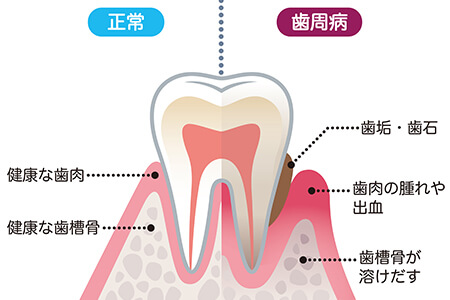
歯周病は、歯と歯ぐきの間に溜まったプラークに潜む歯周病菌が炎症を誘発し、歯ぐきや歯を支える顎の骨（歯槽骨：しそうこつ）を溶かしてしまう病気です。放っておくと顎の骨がどんどん溶かされ、支えを失った歯が抜け落ちてしまうこともあるので、早期発見・早期治療が大切です。
歯周病治療～基本的治療から歯周外科治療まで対応します～
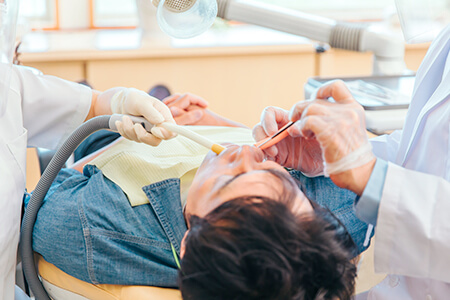
軽度の歯周病であれば、基本治療の「スケーリングやルートプレーニング」で歯ぐきの改善が期待できますが、それでは治らないときには歯周外科処置を行います。それに加えて、歯周病を再発させないような口腔内環境の整備として、合わない人工歯を調整したり、汚れを落としやすい口腔内環境にしたりと、さまざまな治療を行うのです。歯周病を『治す』、そして『再発させない』という2つの視点で、歯周病にアプローチいたします。
「歯周病を知る」それが治療や再発予防につながります
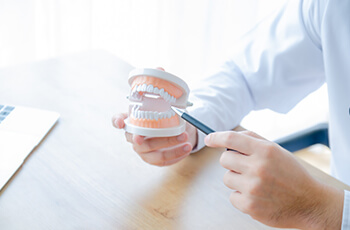
歯周病の初期段階は自覚症状が出にくいので、「歯がグラついてから」やっと治療に訪れる方も少なくありません。しかし、そのときにはすでにかなり進行していて、複雑な治療が必要になることがほとんどです。
そうなる前に治療ができれば、歯やまわりの組織を残せる可能性が高まります。また、歯周病は再発しやすい病気であるため、治療後も定期的な歯科医院でのメインテナンスが欠かせません。ずっと再発をさせないように、また、軽度なうちに早期治療が行えるように、定期検診には積極的にいらしていただきたいです。
また、外科手術を伴う治療の場合、歯肉が退縮するリスクを負うため、事前にしっかりとご説明し、理解いただいてから治療を進めています。
歯周病の治療や予防の知識が深い歯科医師と衛生士による診療
歯周病治療に力を入れる歯科医師による治療
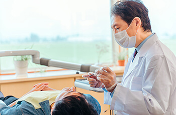
当クリニックには、日本歯科保存学会認定の専門医・認定医が在籍しています。歯科保存学会とは、「保存修復」「歯内療法」「歯周療法」の3つを中心に、さらなる治療システムの向上と技術の習得に努める学会です。「保存修復」とはできるだけ歯を残しながら失った部分を修復すること、「歯内療法」とは根管治療を含めた歯の内部の神経の治療です。
そして、「歯周療法」は歯を支えるまわりの組織の治療で、まさに“歯周病学”です。歯周病の改善には、その進行段階に合わせた治療が欠かせませんので、専門的に学んだ知識と実績をいかして診療します。基本治療では治せないほど進行していても、歯周外科治療での対応が可能です。
歯周病治療に特化した知識を有する歯科衛生士による治療と予防
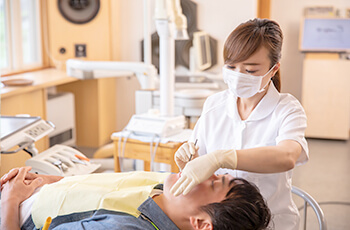
当クリニックには、日本歯周病学会認定歯科衛生士が在籍しています。歯周病の知識が深く、さまざまな治療や予防処置の技術をもつスペシャリストです。受験資格を得るにもさまざまな条件をクリアしなければならず、書類審査とケースプレゼンテーションの試験もあるため、歯科衛生士の認定試験の中でもっとも取得が難しいといわれています。それだけ歯周病についての研鑽を積んでいるからこそ、適切な診療のご提供を可能なのです。当クリニックでは、他のスタッフの技術向上のために院内で勉強会を行い、医院全体で歯周病治療に真剣に取り組んでいます。
歯科医師と歯科衛生士の連携が欠かせません
歯周病の治療や予防の基本は、プラークや歯石の除去です。そのため、歯周病の治療では歯のクリーニングも欠かせません。歯と歯ぐきの溝が深くなり、歯周ポケットが深くなっていると、汚れがたまりやすく歯周病を再発しやすいので、歯のクリーニングの際には1本1本の歯のチェックが必要です。歯の状況を把握したうえで、歯科衛生士と歯科医師が連携して治療と処置にあたることが求められます。
当クリニックは担当歯科衛生士制です。いつも同じ歯科衛生士が患者様を担当しますので、これまでの経緯をふまえたご説明もしやすく、さまざまな処置をスムーズに行えます。さらに、治療を終えたあとの予防（メインテナンス）にもつなげていきやすいのです。
歯周病の進行段階と症状
歯周病は歯肉炎からはじまり、歯周炎へと進んでいきます。進行につれて歯と歯ぐきの溝が深くなるので、その深さが歯周病の進行度の目安となります。
| 歯肉炎 | 歯ぐきに軽い炎症を起こしはじめた状態です。ブラッシングのときに出血することもありますが、痛みはまだありません。 |
|---|---|
|
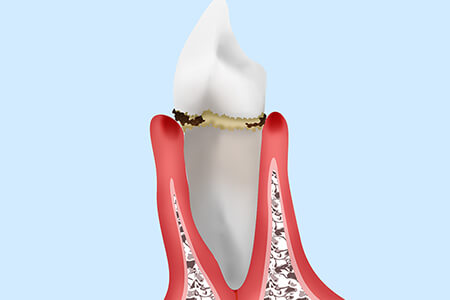 歯周ポケットの深さ |
歯ぐきに軽い炎症を起こしはじめた状態です。ブラッシングのときに出血することもありますが、痛みはまだありません。 |
| 軽度歯周炎 | 歯を支える顎の骨が溶かされはじめた状態です。歯ぐきの腫れや口臭、冷たい物がしみるなどの自覚症状があらわれます。 |
|---|---|
|
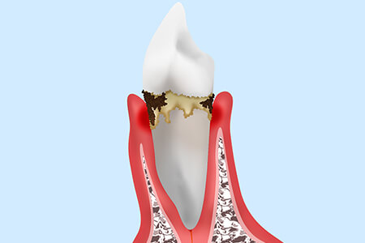 歯周ポケットの深さ |
歯を支える顎の骨が溶かされはじめた状態です。歯ぐきの腫れや口臭、冷たい物がしみるなどの自覚症状があらわれます。 |
| 軽度歯周炎 | 顎の骨が半分程度溶け、歯がグラついている状態です。歯ぐきの腫れや出血が悪化し、口臭がきつくなって歯が浮く感じもあります。 |
|---|---|
|
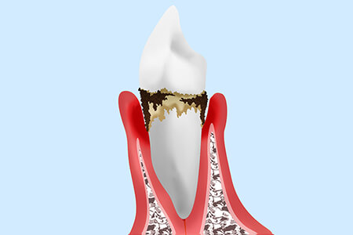 歯周ポケットの深さ |
顎の骨が半分程度溶け、歯がグラついている状態です。歯ぐきの腫れや出血が悪化し、口臭がきつくなって歯が浮く感じもあります。 |
| 重度歯周炎 | 歯を支える顎の骨の大部分が溶けてしまい、歯が大きくグラつく状態です。出血・口臭がひどく、放置すると歯が抜け落ちることもあります。 |
|---|---|
|
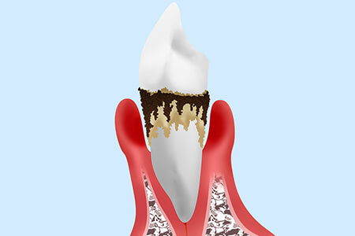 歯周ポケットの深さ |
歯を支える顎の骨の大部分が溶けてしまい、歯が大きくグラつく状態です。出血・口臭がひどく、放置すると歯が抜け落ちることもあります。 |
歯周病の検査方法
歯周ポケット検査
-
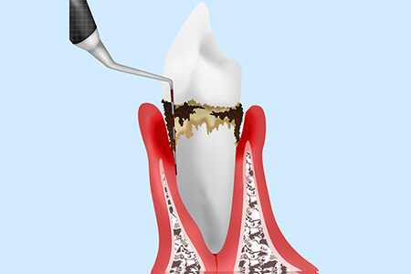
「プローブ」という専用の器具を使って歯周ポケットの深さを測り、進行度合いを確認します。進行するにつれて歯周ポケットが深くなっていく歯周病は、進行状態によって処置が異なります。
歯の揺度検査
-
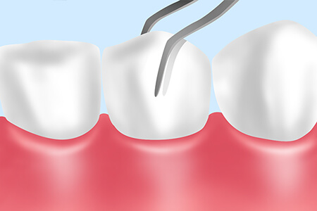
歯周病の進行にともなって歯を支える骨が溶かされてしまうため、進行すればするほど歯のグラつきが大きくなります。この検査では、ピンセットのような器具で歯をつまみ、グラつきの程度を調べます。
レントゲン検査
-
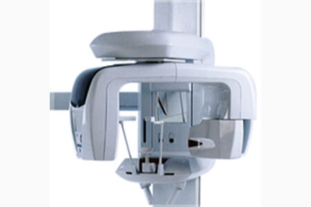
歯周病が進行すると、骨密度が低下します。そのため、レントゲンで顎の骨の状態を撮影し、骨の形や骨密度などを把握して、歯周病の進行度合いを確認します。
※場合により、CT撮影を行うことがあります。
歯周病の処置と治療法
スケーリング
-
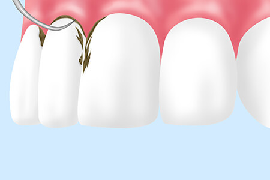
「スケーラー」という専用の器具を用いて、毎日のブラッシングではなかなか落とせないプラークや歯石を除去します。スケーリングをすると歯石が付着していた部分が露出するため、冷たい物がしみることがありますが、口腔内がきれいになった証拠ですので心配はありません。
ルートプレーニング
-
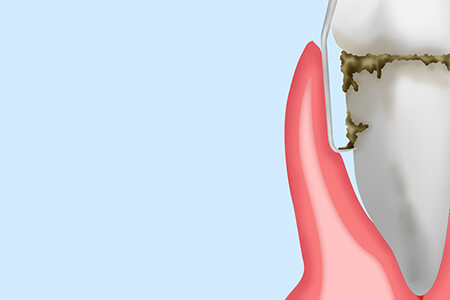
スケーリングでも落としきれない、歯ぐきの深い部分に付着するプラークや歯石を、「キュレット」という器具でかき出します。仕上げに歯根表面のザラつきを滑らかにして、プラークの再付着を防ぎます。
歯周外科治療の処置
歯周ポケット掻爬（そうは）術
-
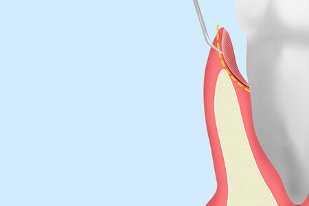
歯ぐきに局所麻酔をしてから、歯周ポケットのプラークや歯石、膿や炎症を起こしている歯肉部位を除去する処置です。
フラップ手術
-

局所麻酔をして歯肉を切開し、歯周ポケットの奥深くに付着するプラークや歯石を除去します。歯根を露出してから行うので、汚れの徹底的な除去が可能です。同時に感染した組織も取り除き、歯肉を縫合します。
歯を支える顎の骨が大きく破壊されている場合には、その再生のために歯周組織再生療法を施します。
歯肉移植
歯ぐきが後退して痩せてしまったとき、歯肉を移植で補います。上顎の口蓋の歯肉部分を切り取り、歯ぐきが不足している部位に移植するのです。
CTG（結合組織移植）
-
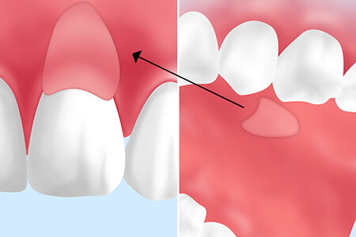
歯ぐきは抜歯をすると陥没したり、何らかの理由で薄くなったりすることがあります。上顎の口蓋から採取した結合組織を、歯肉が痩せて薄くなっている部分の歯ぐきの組織（上皮と骨膜の間）に移植するのが、CTG（connective tissue graft）です。
FGG（遊離歯肉移植）
-
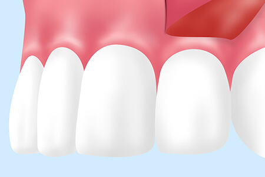
歯根のまわりに角化歯肉（コラーゲン繊維が多く含まれる動かない歯肉）がない場合に、上顎の口蓋から上皮のついた歯肉を切り取って歯根のまわりに移植する処置です。CTGが結合組織のみの移植であるのに対し、FGGは上皮も一緒に移植します。
歯周組織再生療法
歯周組織再生療法は、痩せたり溶かされたりした顎の骨などの歯周組織を再生させるための処置です。歯周病治療だけでなく、インプラント治療の際に用いる再生治療も合わせてご覧ください。
EMD（エムドゲイン）法
-
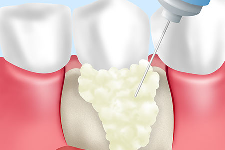
病気に感染した部分を切除し、「エムドゲインゲル」という歯周組織の再生誘導の薬剤を塗布し、歯ぐきの侵入を防ぎながら顎の骨の再生を促します。症例によっては、骨補填剤（こつほてんざい）を併用します。最後に、切開した歯肉を縫合して処置は完了です。
歯科診療には、歯ぐきを整える歯周形成外科があります。笑ったときに歯ぐきが目立つ「ガミースマイル」の場合や、抜歯して歯ぐきが陥没してしまった場合、歯ぐきが痩せて歯が伸びたように見える場合などに、歯ぐきの形状などを整え、健康的で美しい口腔内を実現するのが歯周形成外科です。
また、歯周病などによって歯を支える顎の骨が溶かされてしまった場合、その再生をはかるのが歯周組織再生療法です。顎の骨の再生を促す治療は、重度の歯周病だけでなく、インプラント治療の際にも行います。インプラントを埋め込むのに必要な骨量を確保するためです。
歯周病を「治療」したら、次は「予防」を
当クリニックでは歯周病の再発を防ぐために、「3DS」という予防処置をご提案しています。この3DSは、採取した唾液を調べて歯周病菌の種類と数を特定し、特殊な薬剤を使って口腔内の歯周病菌を除去（除菌）する方法です。
3DSの流れ
- STEP1
- PMTCによってお口の中をクリーニングします。
- STEP2
- 歯型を取り、専用のマウストレーを作製します。
- STEP3
- マウストレーに薬剤を注入し、5分ほど装着します。
- STEP4
- マウストレーを外し、お口の中を洗浄します。
この一連の流れを継続的に行い、歯周病菌を除去していきます。3DSは歯周病予防だけでなく、口臭予防にも効果を発揮します。